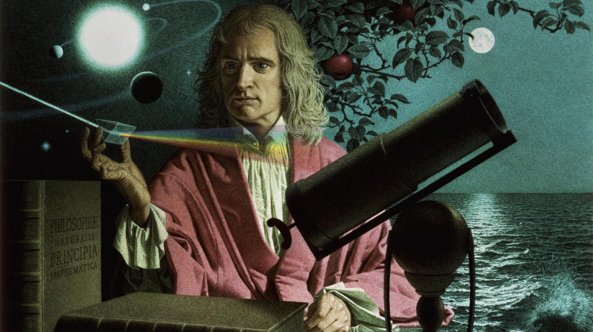

Sir Isaac Newton


Notable moments in the life of Isaac Newton:
- 1642 - Isaac Newton was born on Christmas day in Lincolnshire, England
- 1654 - Attends The King's School, Grantham and was instructed in Latin and Greek but no mathematics.
- 1661 - Was admitted to Trinity College, Cambridge
- 1665 - Discovered the generalised binomial theorem that lead to the creation of calculus
- 1666 - Observed refracting light through a prism which led him to conclude that color is a property intrinsic to light.
- 1667 - Elected a Fellow of Trinity College.
- 1668 - Produced the first reflecting telescope
- 1672 - Elected a Fellow of the Royal Society (FRS)
- 1687 - Published his Principia which has been called "a book dense with the theroy and application of the infinitesimal calculus" in modern times.
- 1704 - Publishes his book Opticks , considered one of the greatest works of science in history
- 1705 - Was knighted by Queen Anne during her visit to Trinity College.
- 1713 - Publishes the second addition of Principia
- 1727 - Dies in his sleep on March 20 and was buried in Westminster Abbey
"I do not know what I may appear to the world, but to myself I seem to have been only like a boy playing on the seashore, and diverting myself in now and then finding a smoother pebble or a prettier shell than ordinary, whilst the great ocean of truth lay all undiscovered before me."
- Isaac Newton